Register IT equipment by serial number, hand it over to employees with a complete, auditable history, link every asset to its Purchase Order and let employees and IT vendors work from the portal.
Odoo's Assets app is an accounting tool (depreciation) and does not answer the questions an IT team asks every day: who has this laptop, since when, who had it before, which PO did it come from, and what happens when an employee leaves? This module is a standalone IT asset register, not linked to Products or Accounting Assets, so it works the same on Community and Enterprise without any accounting set-up.
/my/it-assets) with search, filters, sorting and Group By.All assets with their serial number, current holder, department, Purchase Order and status. Filter by status, warranty expiry, assets still held by employees who have left, and group by category, employee, department, PO or vendor.
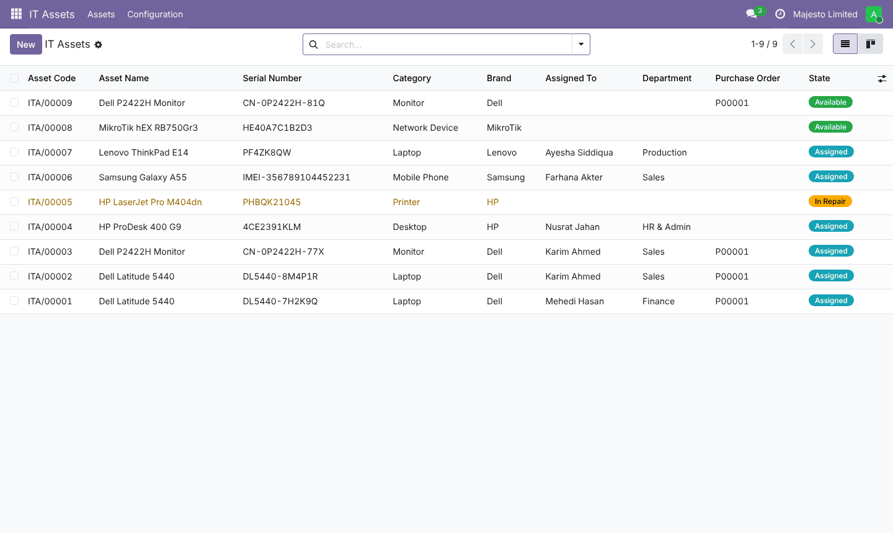
Kanban view grouped by status:
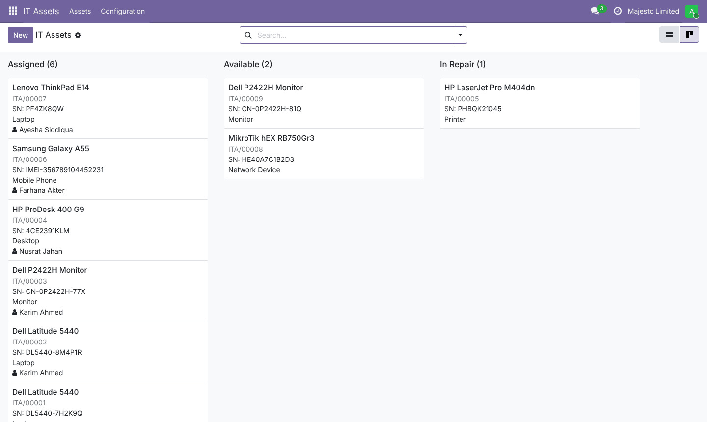
Identification, current holder, purchase & warranty information, specification and the full hand-over history of the asset. Every action is posted in the chatter.
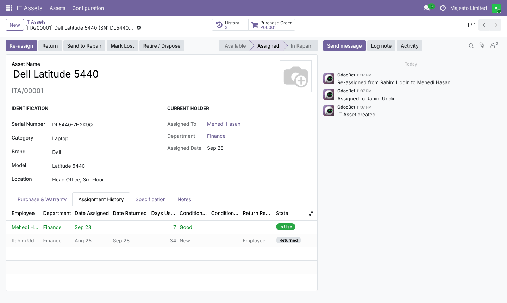
Hand an asset (or several at once) to an employee. If it is already held by someone, their assignment is closed automatically with the reason you choose – e.g. Employee Left / Resigned.
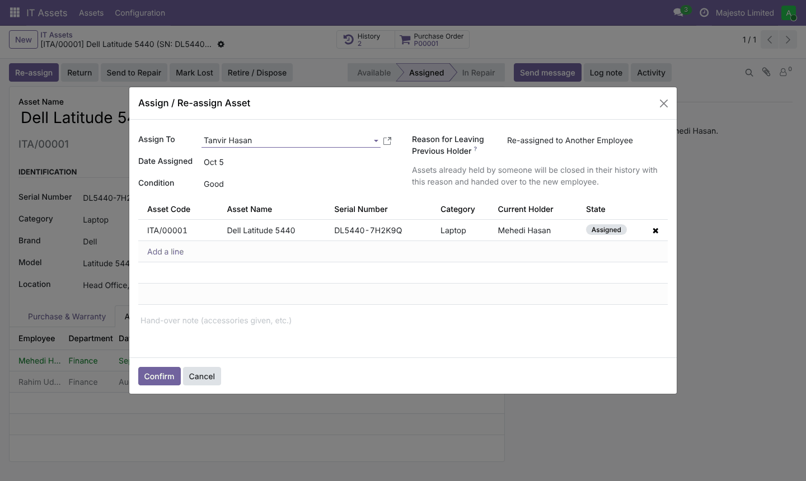
Record the return date, reason and condition, and decide the next status (back to IT stock, In Repair, Lost, Retired). A damaged return suggests In Repair automatically.
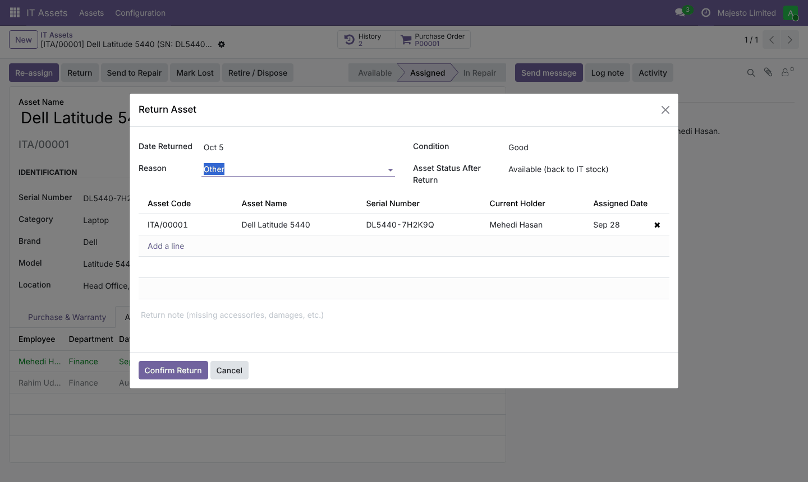
A Create IT Assets button on confirmed Purchase Orders proposes one line per ordered unit that is not registered yet. Enter the serial numbers and the assets are created already linked to the PO, the PO line and the vendor, with the unit cost.
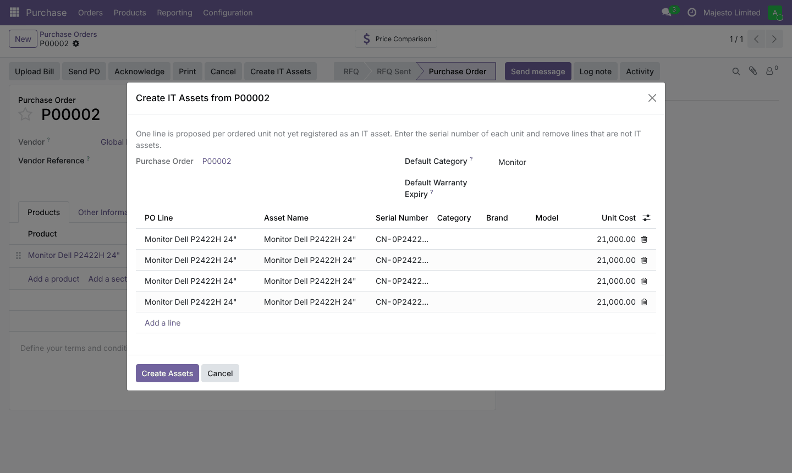
An IT Assets smart button and tab show what the employee currently holds and everything they held before. When someone leaves: Re-assign All to Another Employee or Return All to IT.
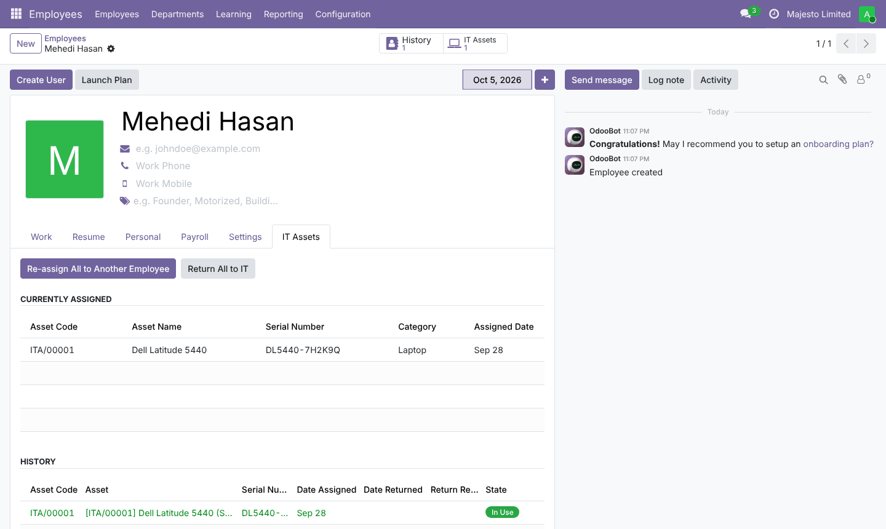
Every hand-over of every asset in one list: employee and department at the time of assignment, dates, days used, conditions and return reason.
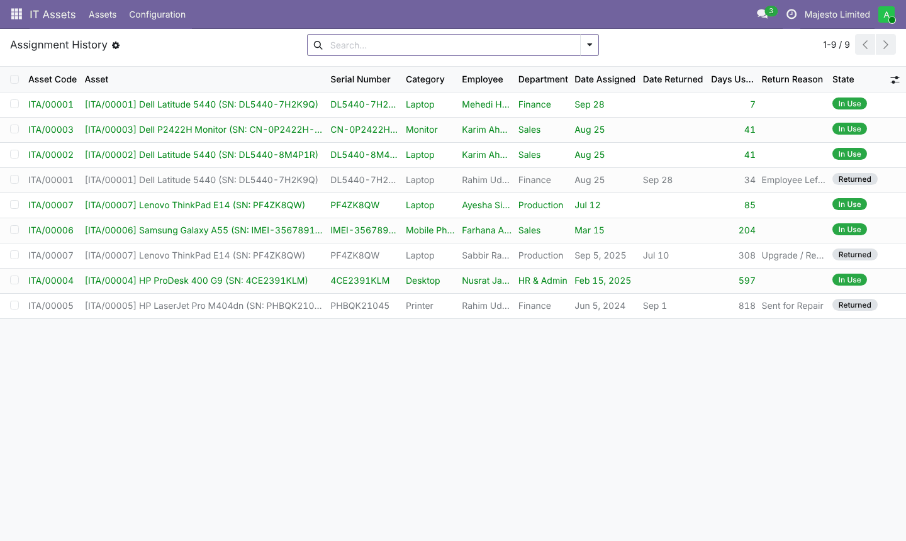
Employees linked to a portal user (Related User or Work Contact) see the assets assigned to them. Portal users flagged as IT Asset Portal Manager – e.g. your outsourced IT vendor – can add, edit, assign, re-assign and return assets, manage categories and create assets from Purchase Orders, without access to the Odoo backend.
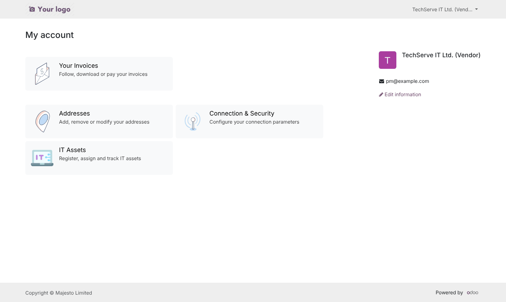
Sort, filter, search and group by Status, Category, Employee, Department, Purchase Order or Vendor.
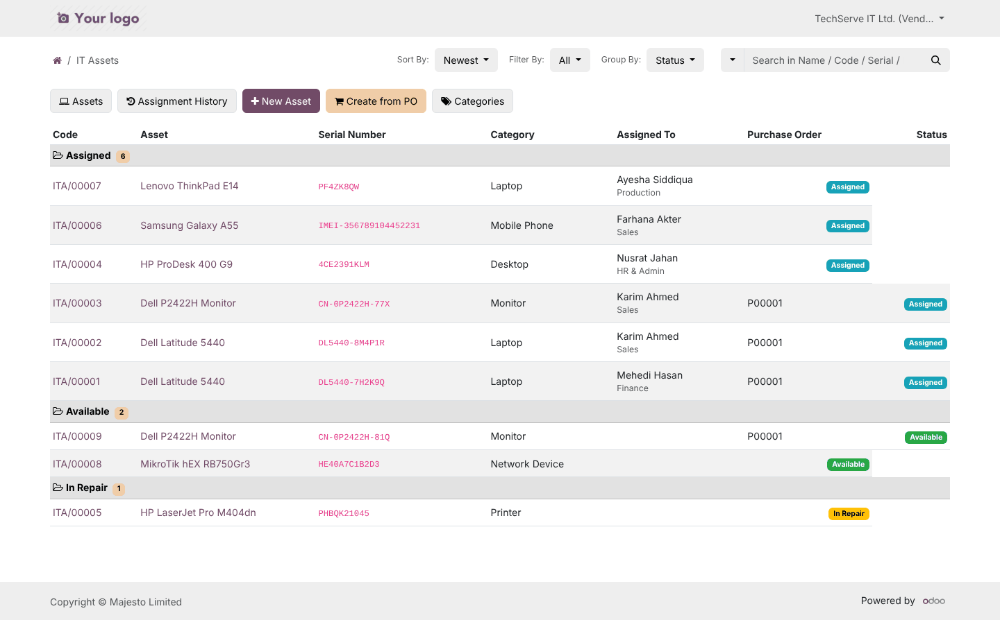
Asset details, re-assign / return forms, status actions and the complete history.
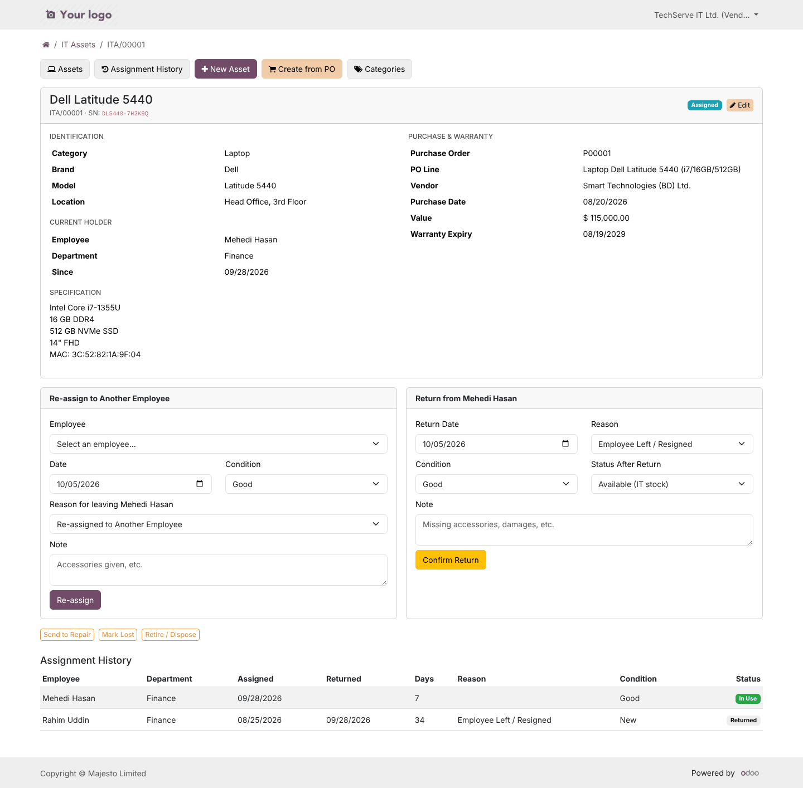
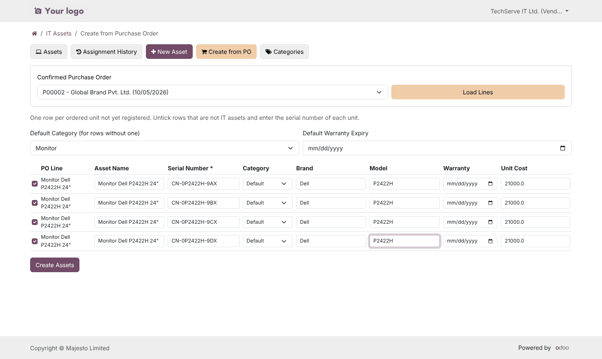
Open the portal user in Settings › Users and tick IT Asset Portal Manager on the Access Rights tab.
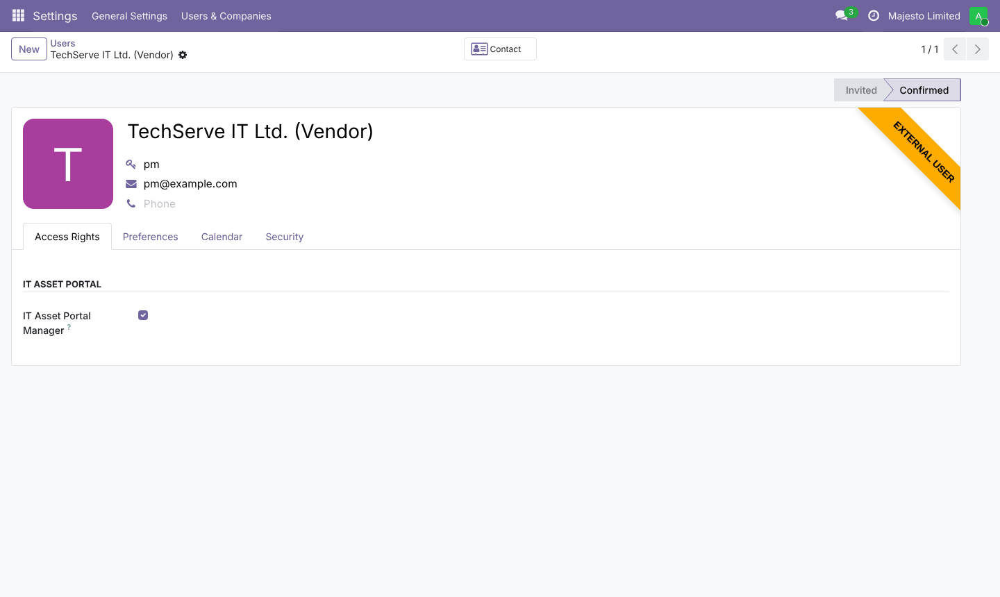
| Group | What they can do |
|---|---|
| IT Asset / User | View assets and assignment history (read-only), backend and portal. |
| IT Asset / Manager | Create and edit assets, assign, re-assign, return, create assets from Purchase Orders, correct history. |
| Settings / Administration | Everything above, plus delete (deletion is reserved to administrators). |
| IT Asset Portal Manager (portal users) | Full asset management from the portal, limited to their companies. |
| Employees (portal or internal) | See the assets currently assigned to them and their own history on the portal. |
<list> views, new <chatter/>, kanban card template.it.asset, it.asset.assignment, it.asset.category; no dependency on Products or Accounting Assets.hr, purchase, portal and mail – all available in Odoo Community.Installation support, training and custom features are available.
juned.ipe@gmail.com WhatsApp: +880 1819571653